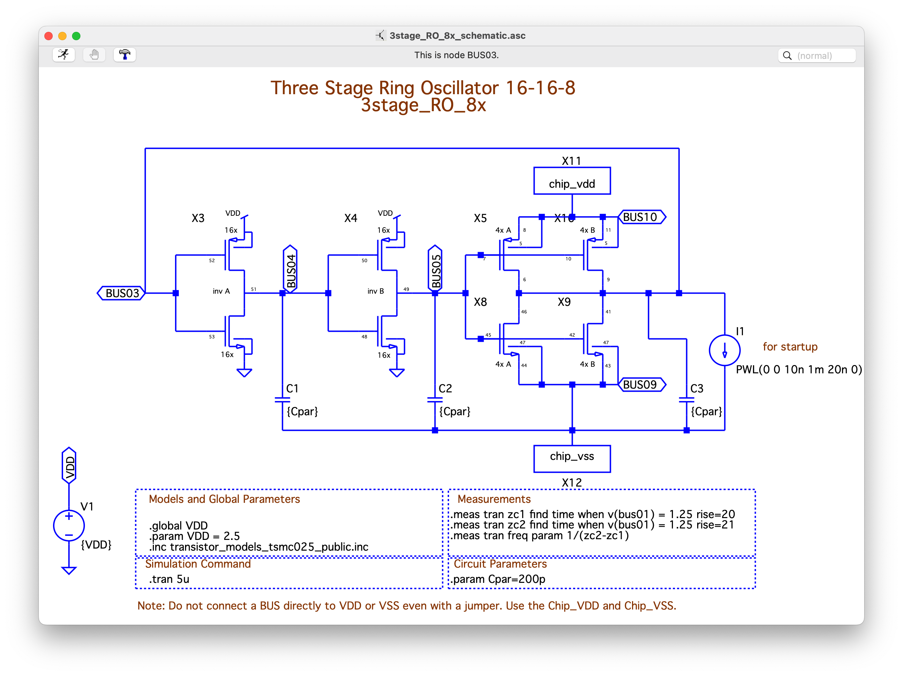
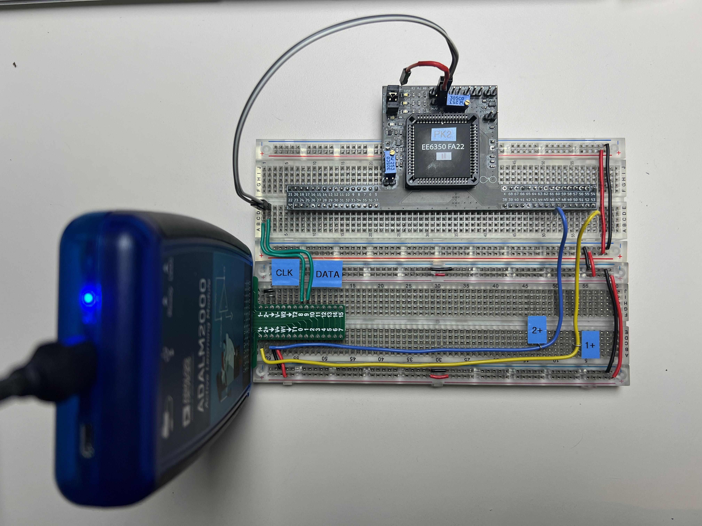
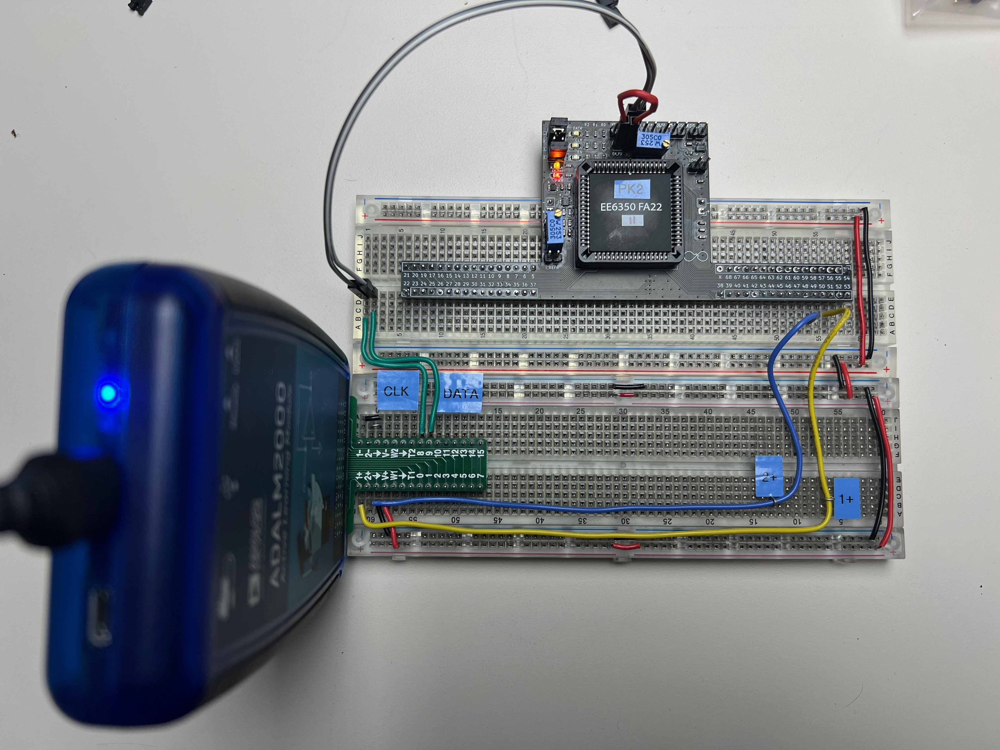

4. Programming the Chip#
At this point, there are two documented flows on how to program the on-chip switch matrix on the MOSbius chip using the CLK, DATA, and EN pins:
using the MOSbiusTools to generate bitstreams for a digital pattern generator,
or using a Rasperry Pi Pico microcontroller with the MOSbius micropython flow.
In both cases, you need a connections.json file [1] that describes which pins are connected to which BUSes. The example below is for the 3-stage ring oscillator circuit that is explained in more detail below. The format is straightforward; for each bus, the connected pins are listed in a list; buses with no connections can be listed with an empty list or can be skipped altogether.
{
"1": [],
"2": [],
"3": [53, 52, 11, 6, 41, 46],
"4": [51, 48, 50],
"5": [45, 7, 42, 10, 49],
"6": [],
"7": [],
"8": [],
"9": [18, 43, 44, 47],
"10": [1, 5, 8, 9]
}
You can create the connections file manually or from an LTspice schematic using the cir_to_connections script (see below).
Once you have the connections file you can proceed with generating bitstream files for your digital pattern generator or upload the connections file to the Raspberry Pi PICO.
Installing the MOSbiusTools
We currently provide two scripts [2] to assist with generating connections and bitstream files to program the switch matrix on the MOSbius chip. The tools can be installed with a python package from TestPyPI called MOSbiusTools:
we advise to create a virtual environment to install the tools;
install using
pip3 install -i https://test.pypi.org/simple MOSbiusTools;this installs the MOSbiusTools module and two executable scripts, more details below:
cir_to_connectionsconverts an LTSpice netlist (.cir) into a connections.json file;connections_to_bitstreamconverts a connections.json file into a bitstream file for a digital pattern generator to program the MOSbius chip;
after installing the package the scripts should be executable from your command line.
4.1. Step 1: Creating a Connections File#
4.1.1. Manually#
You can create a connections file in your text editor by starting from connections.json; for each BUS list the pcb pin numbers that need to be connected to it (OTA example); let’s assume you save it as
connections_my_circuit.json.
4.1.2. From an LTspice Schematic Using cir_to_connections#
create an LTspice schematic using the MOSbius LTspice Symbol Library
save your design as a
.cirfile, e.g.my_circuit.cir. You obtain a.cirnetlist for your LTSpice circuit by right clicking on the schematic, then ‘View SPICE Netlist’, then ‘Save As’.create a connections file:
> cir_to_connections -i my_circuit.cir -o connections_my_circuit.json -d
Note:
the
-dis not required but will provide some output to review the conversion process.you can choose your own filename for the json file, but a .json is recommended.
There are some example .cir files provided in
examples.
4.2. Step 2: Programming MOSbius#
4.2.1. Option 1: using a Raspberry Pi PICO#
To use the Raspberry Pi PICO, you only need a connections.json file and the MOSbius micropython scripts on the PICO will generate the necessary CLK, DATA, and EN signals.
Please review the documentation at the MOSbius_MicroPython_Flow by Jianxun Zhu for detailed instructions and examples.
4.2.2. Option 2: using a Digital Pattern Generator#
To use a digital pattern generator (like e.g., the one in the ADALM2000 used below) you need to create bitstream files from the connections file:
> connections_to_bitstream -i connections_my_circuit.json -o my_circuit_bitstream.txt -d
-dis not required but will provide output so you can review the conversion.you can choose your own filename for the output file, but a
.txtextension is recommended; besidesmy_circuit_bitstream.txt,my_circuit_bitstream_clk.txtwill also be generated.
The bitstream files can be used with the ADALM2000 to generate the digital programming waveforms (CLK and DATA), see below.
4.3. Worked-out Example of Programming a Three-Stage Ring Oscillator using the ADALM 2000 Digital Pattern Generator#
4.3.1. Starting from LTspice Schematic#
First, we build the 3-stage 16-16-8 ring-oscillator circuit schematic in LTspice using the MOSbius symbol library. It uses the two 16x inverter stages and creates an 8x inverter stage by combining the pairs of 4x nMOS and pMOS transistors; we use BUS9 for VSS and BUS10 for VDD.

We save the netlist of the circuit as a .cir file by right clicking on the schematic, then View Spice Netlist, and File Save as.
Next, we translate the schematic cir file to connections json file (see instructions above):
> cir_to_connections -i 3stage_RO_8x_vdd_10_vss_9.cir -o connections_3stage_RO_8x_vdd_10_vss_9.json`
Continue on with the next step.
4.3.2. Starting from a Connections File#
We can generate the connections json file from a schematic or create it manually in a text editor.
Then we translate it into a bitstream and clock file:
> connections_to_bitstream -i connections_3stage_RO_8x_vdd_10_vss_9.json -o 3stage_RO_8x_vdd_10_vss_9.txt
4.3.3. Uploading the Bitstream File into the MOSbius Chip#
The chip is connected to the ADALM2000 as shown here: 
DIO channels 8 and 9[3] are wired to the CK and DT headers respectively at the top of the PCB that are the inputs of the digital level converters. Jumpers are placed on the DATA and CLK headers on the top left to connect the level-converted digital signals to the MOSbius chip. In this example, we are using a manual EN1. A jumper is placed on the bottom header on the top left of the PCB. The EMU_PUis left open for now (short jumper cable is dangling in the air in the photo). Please review the PCB description.
Fig. 4.3 Location of the digital signal connections and jumpers.#
We configure the Pattern Generator function of the ADALM2000 to have two digital output channels: DIO 8 and 9 and upload the clock and the bitstream file to channel 8 and 9 respectively as shown below. The frequency for the clock waveform has to be twice the frequency for the bitstream waveform; we typically use 200kHz for the frequency for CLK and 100kHz for the frequency for DATA.
Screenshot of the Pattern Generator screen of Scopy controlling the ADALM2000 after the bitstream and clock file have been read in for channels 9 and 8 respectively.#
Zoom in on the digital waveforms showing the alignment between the data and clock waveforms.#
During programming the EN needs to be LOW; we leave it floating so the internal pull-down will hold it LOW; and we also disconnect the 1+ and 2+ scope inputs, or any other connections from the ADALM2000.
We turn on the 2.5V power supply for the MOSbius chip (the red LED on the PCB turns on) and then upload the bitstream into the MOSbius chip using the Single (Run) function. If you look closely you see the data/clock LEDs on the PCB flicker briefly.
4.3.4. Enabling the MOSbius Chip#

We now enable the connection matrix by asserting the EN signal by shorting the EMU_PU jumper connection[4]. Notice that the red LED shows that the chip is powered and the orange LED shows the switch matrix is enabled.
The measurements are further described here.